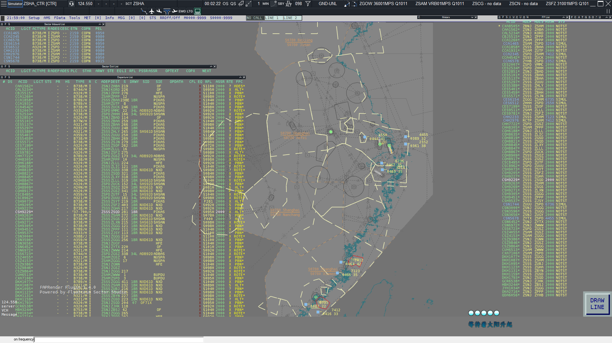
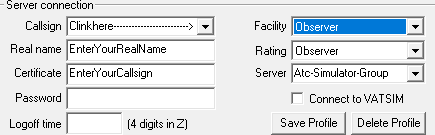

SimpleFSD
Warning
此部分内容由marked解析器编写，而本项目部分使用的Python Markdown可能导致不兼容 尽请谅解！我们已尽力修复 Thx for you understand.
本项目正在快速迭代中, API接口可能不稳定, 请及时查阅最新的API文档
一个用于模拟飞行联飞的FSD, 使用Go语言编写
FSD支持计划同步, 计划锁定, 网页计划提交
如果您觉得这个FSD功能太多, 过于庞大
我们还有专门精简过功能的lite版本
lite版本仅保留了核心的fsd功能
当然我们还是建议您使用全功能fsd以获得更好的体验
想提交PR？想自己对服务器进行二次开发？请查阅我们的WIKI



如何使用
使用方法
- 获取服务器可执行文件
i. 在Release里面下载对应版本的构建
ii. 克隆整个存储库自己构建
iii. 也可以前往Action页面获取最新开发版(开发版本可能不稳定且会产生Bug, 请谨慎使用) - 运行服务器可执行文件, 第一次运行会报错并自动退出, 这是为了生成配置文件模板放置到同目录, 此时您可以
i. 先按照配置文件简介里面的介绍完成服务器配置后再启动
ii. 直接运行服务端可执行文件, 服务器会使用默认配置运行
注意：默认配置下使用sqlite数据库存储数据, 而sqlite在多线程写入的时候有很严重的性能瓶颈, 且sqlite以单文件形式存储与磁盘, 受硬盘性能影响较大
感谢3370的简易测试结果：
在本地部署不考虑带宽的情况下, sqlite最多可以支持的客户端数量大约在200-300并且有概率断线
而在使用mysql数据库的时候, 可以轻松跑到400+的客户端, 还有余力 ~~(因为测试程序是用python写的, 所以测试程序产生了瓶颈)~~
所以我们建议
- 不要使用sqlite作为长期数据库使用
- 不要在使用sqlite作为数据库的时候进行大流量或者大压力测试
如果真的没有部署大型关系型数据库(比如mysql)的条件
那么我们建议将simulator_server开关打开, 即将本服务器作为模拟机服务器使用
因为模拟机服务器模式下, 飞行机组的飞行计划不会写入数据库, 很大一部分是缓存在内存中,
可以一定程度上解决sqlite写入性能差的问题
此项目不是纯粹的FSD项目, 同时也集成了HTTP API服务器与gRPC服务器
在此处查看更详细的说明和查看API文档
构建方法
- 克隆本仓库
- 确保安装了go编译器并且版本>=1.23.4
- 在项目根目录运行如下命令
go build -x .\cmd\fsd\ - [可选]使用upx压缩可执行文件
i. (windows)upx.exe -9 .\fsd.exe
ii. (linux)upx -9 .\fsd - 等待编译完成后
i. 对于Windows用户, 可执行文件为fsd.exe
ii. 对于linux用户, 可执行文件为fsd
配置文件简介
{
// 配置文件版本, 通常情况下与软件版本一致
"config_version": "0.8.1",
// 服务配置
"server": {
// 通用配置项
"general": {
// 是否为模拟机服务器
// 由于需要实现检查网页提交计划于实际连线计划是否一致
// 所以飞行计划存储是用用户cid进行标识的
// 但模拟机所有的模拟机都是一个用户cid, 此时就会出问题
// 即模拟机计划错误或者无法获取到计划
// 这个时候将这个变量设置为true
// 这样服务器就会使用呼号作为标识
// 但是与此同时就失去了呼号匹配检查的功能
// 但网页提交计划仍然可用, 只是没有检查功能
// 所以将这个开关命名为模拟机服务器开关
"simulator_server": false,
// 密码加密轮数
"bcrypt_cost": 12
},
// FSD服务器配置
"fsd_server": {
// FSD名称, 会被发送到连接到服务器的客户端作为motd消息
"fsd_name": "Simple-Fsd",
// FSD服务器监听地址
"host": "0.0.0.0",
// FSD服务器监听端口
"port": 6809,
// 机场数据路径, 若不存在会自动从github下载
"airport_data_file": "data/airport.json",
// 服务器飞行路径记录间隔
// 这里间隔的意思是：当客户端每发过来N个包就记录一次位置
"pos_update_points": 1,
// FSD服务器心跳间隔, 超过此时间FSD会认为客户端断开连接
// 由于ES的发包最大间隔为25s, 加之服务器处理也需要时间
// 推荐此数值大于30s, 但不得小于25s
"heartbeat_interval": "40s",
// whazzup更新时间
"whazzup_cache_time": "15s",
// FSD服务器会话过期时间
// 在过期时间内重连, 服务器会自动匹配断开时的session
// 反之则会创建新session
"session_clean_time": "40s",
// 最大工作线程数, 也可以理解为最大同时连接的sockets数目
"max_workers": 128,
// 最大广播线程数, 用于广播消息的最大线程数
"max_broadcast_workers": 128,
// 首行发送到客户端的motd格式, 第一个参数为fsd_name, 第二个为版本号
"first_motd_line": "Welcome to use %[1]s v%[2]s",
// ES视程范围限制
"range_limit": {
// 是否断开超出视程范围的客户端
"refuse_out_range": false,
"observer": 300,
"delivery": 20,
"ground": 20,
"tower": 50,
"approach": 150,
"center": 600,
"apron": 20,
"supervisor": 300,
"administrator": 300,
"fss": 1500
},
// 要发送到客户端的motd消息
"motd": [
"This is my test fsd server"
]
},
// Http服务器配置
"http_server": {
// 是否启用Http服务器
"enabled": false,
// 服务器的外网访问地址, 用于little nav map的在线航班显示
// 如果你不需要little nav map的在线航班显示, 你可以不管这个
"server_address": "http://127.0.0.1:6810",
// Http服务器监听地址
"host": "0.0.0.0",
// Http服务器监听端口
"port": 6810,
// 代理类型
// 0 直连无代理服务器
// 1 代理服务器使用 X-Forwarded-For Http头部
// 2 代理服务器使用 X-Real-Ip Http头部
"proxy_type": 0,
// 信任的ip来源, 用于获取真实用户ip
// 详情请见: https://echo.labstack.com/docs/ip-address
// 具体来说这里填写的是前方代理服务器的ip地址
// 内网地址默认被信任
// 如果网站前方有CDN, 那么这里需要填写CDN节点的所有可能节点IP
// 格式为CIDR, 例如: 101.71.100.0/24
"trusted_ip_range": [],
// POST请求的请求体大小限制
// 将本选项设置为空字符串可以禁用大小限制
"body_limit": "10MB",
// 服务器存储配置
"store": {
// 存储类型, 可选类型为
// 0 本地存储
// 1 阿里云OSS存储
// 2 腾讯云COS存储
"store_type": 0,
// 储存桶地域, 本地存储此字段无效
"region": "",
// 存储桶名称, 本地存储此字段无效
"bucket": "",
// 访问Id, 本地存储此字段无效
"access_id": "",
// 访问秘钥, 本地存储此字段无效
"access_key": "",
// CDN访问加速域名, 本地存储此字段无效
"cdn_domain": "",
// 使用内网地址上传文件, 仅阿里云OSS存储此字段有效
"use_internal_url": false,
// 本地文件保存路径
"local_store_path": "uploads",
// 远程文件保存路径, 本地存储此字段无效
"remote_store_path": "fsd",
// 文件限制
"file_limit": {
// 图片文件限制
"image_limit": {
// 允许的最大文件大小, 单位是B
"max_file_size": 5242880,
// 允许的文件后缀名
"allowed_file_ext": [
".jpg",
".png",
".bmp",
".jpeg"
],
// 存储路径前缀
"store_prefix": "images",
// 是否在本地也保存一份
// 使用本地存储时此字段必须为true
"store_in_server": true
},
// 文件限制
"file_limit": {
"max_file_size": 10485760,
"allowed_file_ext": [
".md",
".txt",
".pdf",
".doc",
".docx"
],
"store_prefix": "files",
"store_in_server": false
}
}
},
"limits": {
// Api访问限速
// 每个IP的每个接口均单独计算
"rate_limit": 15,
// Api访问限速窗口
// 即 rate_limit 每 rate_limit_window
// 滑动窗口计算
"rate_limit_window": "1m"
},
// 邮箱配置
"email": {
// SMTP服务器地址
"host": "smtp.example.com",
// SMTP服务器端口
"port": 465,
// 发信账号
"username": "noreply@example.cn",
// 发信账号密码或者访问Token
"password": "123456",
// 邮箱验证码过期时间
"verify_expired_time": "5m",
// 验证码重复发送间隔
"send_interval": "1m",
// 邮件模板定义
"template": {
// 验证码模板
"verify_code_email": {
// 文件存储路径
"file_path": "template/email_verify.template",
// 邮件标题
"email_title": "邮箱验证码",
// 是否启用该邮件, 注意验证码邮件无法关闭
"enable": true
},
"atc_rating_change_email": {
"file_path": "template/atc_rating_change.template",
"email_title": "管制权限变更通知",
"enable": true
},
"permission_change_email": {
"file_path": "template/permission_change.template",
"email_title": "管理权限变更通知",
"enable": true
},
"kicked_from_server_email": {
"file_path": "template/kicked_from_server.template",
"email_title": "踢出服务器通知",
"enable": true
},
"password_change_email": {
"file_path": "template/password_change.template",
"email_title": "飞控密码更改通知",
"enable": true
},
"application_passed_email": {
"file_path": "template/application_passed.template",
"email_title": "管制员申请通过",
"enable": true
},
"application_rejected_email": {
"file_path": "template/application_rejected.template",
"email_title": "管制员申请被拒",
"enable": true
},
"application_processing_email": {
"file_path": "template/application_processing.template",
"email_title": "管制员申请进度通知",
"enable": true
},
"ticket_reply_email": {
"file_path": "template/ticket_reply.template",
"email_title": "工单回复通知",
"enable": true
}
}
},
// JWT配置
"jwt": {
// JWT对称加密秘钥
// 请一定要保护好这个秘钥
// 并确保不被任何不信任的人知道
// 如果该秘钥泄露, 任何人都可以伪造管理员用户
// 更安全的做法是将本字段置空, 这样每次服务器重启都会使得之前的秘钥全部失效
"secret": "123456",
// JWT主密钥过期时间
// 建议不要大于1小时, 因为JWT秘钥是无状态的
// 所以如果主密钥过期时间太长可能会导致安全问题
"expires_time": "15m",
// JWT刷新秘钥过期时间
// 该时间是在JWT主秘钥过期时间之后的时间
// 比如两者都是1h, 那么刷新秘钥的过期时间就是2h
// 因为不可能你刷新秘钥比主密钥过期还早:(
"refresh_time": "24h"
},
// SSL配置
"ssl": {
// 是否启用SSL
"enable": false,
// 是否启用HSTS
"enable_hsts": false,
// HSTS过期时间(s)
"hsts_expired_time": 5184000,
// HSTS是否包括子域名
// 警告：如果你的其他子域名没有全部部署SSL证书
// 打开此开关可能导致没有SSL证书的域名无法访问
// 如果不懂请不要打开此开关
"include_domain": false,
// SSL证书文件路径
"cert_file": "",
// SSL私钥文件路径
"key_file": ""
}
},
// gRPC服务器
"grpc_server": {
// 是否启用gRPC服务器
"enabled": false,
// gRPC服务器监听地址
"host": "0.0.0.0",
// gRPC服务器监听端口
"port": 6811,
// gRPC服务器Api缓存时间
"whazzup_cache_time": "15s"
}
},
// metar报文源
"metar_source": [
{
// 查询地址, %s会被替换为机场ICAO码
"url": "https://aviationweather.gov/api/data/metar?ids=%s",
// 返回raw: 直接返回metar文本
"return_type": "raw",
// 数据排列方式, 此值为false时, 服务器取第一行作为metar报文, 反之取最后一行
"reverse": false,
// 数据分行方式
// 当此行为空时, 服务器认为返回值里面仅有一条metar报文
// 不为空时, 服务器按照此配置作为分隔符切分数据并按照`reverse`字段配置返回报文
"multiline": ""
},
{
"url": "https://example.com/api/metar?icao=%s&style=html",
// 返回html: 返回一个html网页
"return_type": "html",
"reverse": false,
// html css 选择器, 用于提取metar报文
"selector": "body > div > pre",
"multiline": "\n"
},
{
"url": "https://example.com/api/metar?icao=%s&style=json",
// 返回json: 返回json格式的数据
"return_type": "json",
// jsonpath字符串, 用于提取json中的metar报文
"selector": "$.data.metar",
"reverse": false,
"multiline": "\n"
}
],
// 数据库配置
"database": {
// 数据库类型, 支持的数据库类型: mysql, postgres, sqlite3
"type": "mysql",
// 当数据库类型为sqlite3的时候, 这里是数据库存放路径和文件名
// 反之则为要使用的数据库名称
"database": "go-fsd",
// 数据库地址
"host": "localhost",
// 数据库端口
"port": 3306,
// 数据库用户名
"username": "root",
// 数据库密码
"password": "123456",
// 是否启用SSL
"enable_ssl": false,
// 数据库连接池连接超时时间
"connect_idle_timeout": "1h",
// 连接超时时间
"connect_timeout": "5s",
// 数据库最大连接数
// 这个数字请求改为你实际的数据库配置
"server_max_connections": 32
},
// 特殊权限配置, 详情请见`特殊权限配置` 章节
"rating": {},
// 席位配置, 详情请见`特殊席位配置` 章节
"facility": {}
}
命令行参数
| 参数名 | 类型 | 默认值 | 作用 |
|---|---|---|---|
| -help | × | × | 显示命令帮助 |
| -debug | bool | false | 开启调试模式 |
| -config | string | "./config.json" | 配置文件路径 |
| -skip_email_verification | bool | false | 跳过邮箱验证 |
| -update_config | bool | false | 迁移配置文件, 迁移旧版本配置文件 |
| -no_logs | bool | false | 禁用日志输出到文件 |
| -message_queue_channel_size | int | 128 | 内置消息队列大小 |
| -download_prefix | str | 本仓库raw地址 | 下载前缀, 用于无法连接到github或其他情况下使用 |
| -metar_cache_clean_interval | str | 30s | 过期metar报文清理间隔 |
| -metar_query_thread | int | 32 | metar报文查询线程数 |
| -fsd_record_filter | int | 10 | fsd连线记录数值过滤 |
环境变量
环境变量会覆盖对应的命令行参数
| 参数名 | 类型 | 默认值 | 作用 |
|---|---|---|---|
| DEBUG_MODE | bool | false | 开启调试模式 |
| CONFIG_FILE_PATH | string | "./config.json" | 配置文件路径 |
| SKIP_EMAIL_VERIFICATION | bool | false | 跳过邮箱验证 |
| UPDATE_CONFIG | bool | false | 迁移配置文件, 迁移旧版本配置文件 |
| NO_LOGS | bool | false | 禁用日志输出到文件 |
| MESSAGE_QUEUE_CHANNEL_SIZE | int | 128 | 内置消息队列大小 |
| DOWNLOAD_PREFIX | str | 本仓库raw地址 | 下载前缀, 用于无法连接到github或其他情况下使用 |
| MESSAGE_QUEUE_CHANNEL_SIZE | int | 128 | 内置消息队列大小 |
| METAR_CACHE_CLEAN_INTERVAL | str | 30s | 过期metar报文清理间隔 |
| METAR_QUERY_THREAD | int | 32 | metar报文查询线程数 |
| FSD_RECORD_FILTER | int | 10 | fsd连线记录数值过滤 |
权限定义表
FSD管制权限一览
| 权限识别名 | 权限值 | 中文名 | 说明 |
|---|---|---|---|
| Ban | -1 | 封禁 | |
| Normal | 0 | 普通用户 | 默认权限 |
| Observer | 1 | 观察者 | |
| STU1 | 2 | 放行/地面 | |
| STU2 | 3 | 塔台 | |
| STU3 | 4 | 终端 | |
| CTR1 | 5 | 区域 | |
| CTR2 | 6 | 区域 | 该权限已被弃用, 这里写出来只是为了与ES同步 |
| CTR3 | 7 | 区域 | |
| Instructor1 | 8 | 教员 | |
| Instructor2 | 9 | 教员 | |
| Instructor3 | 10 | 教员 | |
| Supervisor | 11 | 监察者 | |
| Administrator | 12 | 管理员 |
管制席位一览
注：Pilot往后的席位为虚拟席位, 实际EuroScope中并没有这些席位的选项
| 席位识别名 | 席位编码 | 中文名 | 说明 |
|---|---|---|---|
| OBS | 1 | 观察者 | |
| FSS | 2 | 飞服 | |
| DEL | 4 | 放行 | |
| GND | 8 | 地面 | |
| TWR | 16 | 塔台 | |
| APP | 32 | 进近 | |
| CTR | 64 | 区域 | |
| Pilot | 128 | 飞行员 | 连线飞行员属于该席位 |
| RMP | 256 | 机坪 | |
| SUP | 512 | 监察者 | |
| ADM | 1024 | 管理员 |
管制权限与管制席位对照一览
| 权限识别名 | 允许的席位 | 说明 |
|---|---|---|
| Ban | 不允许任何席位 | 封禁用户 |
| Normal | Pilot | |
| Observer | Pilot,OBS | |
| STU1 | Pilot,OBS,DEL,GND,RMP | |
| STU2 | Pilot,OBS,DEL,GND,RMP,TWR | |
| STU3 | Pilot,OBS,DEL,GND,RMP,TWR,APP | |
| CTR1 | Pilot,OBS,DEL,GND,RMP,TWR,APP,CTR | |
| CTR2 | Pilot,OBS,DEL,GND,RMP,TWR,APP,CTR | |
| CTR3 | Pilot,OBS,DEL,GND,RMP,TWR,APP,CTR,FSS | |
| Instructor1 | Pilot,OBS,DEL,GND,RMP,TWR,APP,CTR,FSS | |
| Instructor2 | Pilot,OBS,DEL,GND,RMP,TWR,APP,CTR,FSS | |
| Instructor3 | Pilot,OBS,DEL,GND,RMP,TWR,APP,CTR,FSS | |
| Supervisor | Pilot,OBS,DEL,GND,RMP,TWR,APP,CTR,FSS,SUP | |
| Administrator | Pilot,OBS,DEL,GND,RMP,TWR,APP,CTR,FSS,SUP,ADM |
特殊权限配置
你可以通过配置文件覆写管制权限与管制席位对照表
注意!!! 这个字段会覆盖默认的对照表
所以在明确的知道你在做什么之前, 不要修改这个配置
配置文件字段为rating
{
// 特殊权限配置
"rating": {
// 键为想要修改的权限识别名的权限值
// 比如我想让Normal也可以上OBS席位, 也就是普通飞行员也可以以OBS身份连线
// Normal的权限值是0, 那我的键就是0
// 值为想要许可连线的席位的席位编码之和
// 比如我想让飞行员可以正常连线, 也可以以OBS连线
// 那么值就是 128 + 1 = 129
// 如果我想他还能上个飞服(请勿模仿)
// 那么值就是 128 + 1 + 2 = 131
// 其他权限的对照表保持为默认
// 你也可以将某个权限的值写为0来禁止使用该权限登录fsd
"0": 3
}
}
特殊席位配置
你可以通过配置文件覆写呼号后缀与管制席位对照表
注意!!! 这个字段会覆盖默认的对照表
默认的席位对照表如下
| 席位后缀名 | 允许的席位 |
|---|---|
| ADM | ADM |
| SUP | SUP |
| OBS | OBS |
| DEL | DEL |
| RMP | RMP |
| GND | GND |
| TWR | TWR |
| APP | APP |
| CTR | CTR |
| FSS | FSS |
| ATIS | TWR |
在明确的知道你在做什么之前, 不要修改这个配置
配置文件字段为facility
{
// 特殊席位配置
"facility": {
// 键为想要修改呼号后缀名
// 什么是呼号后缀名？
// 比如有个管制的呼号为XXXX_YYY, 后缀名就是YYY
// 如果呼号是XXX_Y_ZZZ, 后缀名就是ZZZ, 以此类推
// 值为登录该席位需要的许可席位的席位编码之和
// 如果没有需要的权限，服务器会拒绝连接
// 当然如果当前权限值就不允许登录该席位, 那么自然是无效的
// 比如你用GND的权限登录TWR席位, 那自然是不允许登录的
// 同时这个配置允许你自定义席位后缀名
// 比如我设置一个席位后缀为BOT, 然后它可以用OBS席位登录
// 配置项如下
// "BOT": 1
// 那么我就可以用ZZZZ_BOT登录服务器了
// 你也可以对某个席位设置一个足够大的数字, 从而禁用该席位登录fsd
"TWR": 16
}
}
在EuroScope中, Callsign, Facility, Rating 是三个独立的值 但在本FSD中, 三者之间是有对应联系的

反馈办法
如您在使用FSD中遇到了任何/疑似bug的错误，请提交Issue 在提交时，需要您按照以下步骤进行：
链接
开源协议
MIT License
Copyright © 2025 Half_nothing
无附加条款。